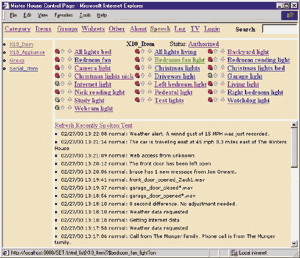
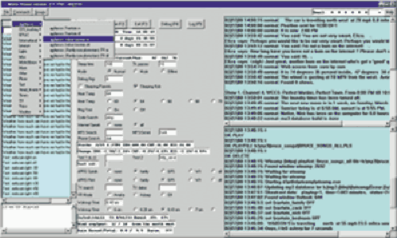
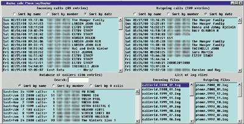
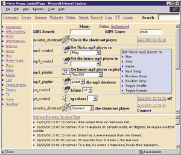

| URLs Mentioned: |
| MisterHouse......................http://misterhouse.net perl2exe.....................http://www.demobuilder.com |
When most people think of Home Automation (HA), they think of The Jetsons, where every appliance in the house has a mind of its own and occasionally does something you want it to do. The classic image of a HA geek is a man who lives in his easy chair, controlling every aspect of his life with voice commands and buttons like you see in Figure 1.
| Figure 1. The Web interface to MisterHouse allows you to toggle, brighten, or dim any X10 appliance. |
|  |
This article shows you my take on HA, used for practical, everyday chores that even your technophobe spouse or relative might appreciate. You can do it with the computer you have today. And you don't have to be Bill Gates to afford it. And you can do it all with your most favorite programing language!
Ha! Perl?
So why does Perl make an excellent choice for an HA programming language? Let me count the ways:
Concise and object-oriented. HA is object-oriented programming in its most literal sense, allowing Perl's concise object syntax to shine. What could be simpler and more intuitive than a event like this:
set $christmas_lights ON;
Behind the scenes, we build a generic serial port object, and then easily build objects for more specialized serially-controlled devices that inherit the generic serial port's methods.
Good with strings. Every good smart house should be able to read and write. And boy, can Perl read and write!
As an example, consider the David Letterman Top 10 list. Sometimes very funny, and always past my bedtime. With a few lines of Perl, we can retrieve the previous night's list from the web and convert it into a speakable string that can then be served with the morning breakfast:
# Get the HTML and translate to text
my $html = get 'http://marketing.cbs.com/lateshow/topten';
my $text = HTML::FormatText->new(lm => 0, rm => 150)->
format(HTML::TreeBuilder->new()->parse($html));
$text =~ s/^.+?the Top Ten/The Top Ten/s;
# Delete text before the list
$text =~ s/(.+\n *1\..+?)\n.+/$1\n/s;
# Delete text after the list
$text =~ s/([^\.\?\!])\n/$1\.\n/g;
# Add a period at end of lines.
speak $text;
The mighty eval. Rather than stopping and restarting the entire program from scratch each time we want to change something, we can use eval to quickly load in just the code that has changed.
This is especially useful with a complex HA program, where small changes to event programming can be frequent and you don't want your house offline for very long.
Free and ubiquitious. Not only is Perl free, but it also runs everywhere. The HA community is currently split between Windows (lots of fun software/periperals) and Unix (reliable, which is kind of important for HA). Using Perl, we can easily switch between platforms when it makes sense.
MisterHouse
Now that you're convinced that Perl is good (admittedly not a tough sell for TPJ readers), how can you use it to control your house? With MisterHouse! Cue the infomercial music...
|  |
| Figure 2. This Perl/Tk interface to MisterHouse has the same functions as the web interface. Commands are on the left, Tk widgets in the middle, and the speech and print logs are on the right. |
About two years ago I began a Perl program called MisterHouse. A little over one year ago I posted it to the net and started a mailing list. Since then, the growing user group (about 250 subscribers by the end of '99) has helped shape it into a fairly powerful HA program with the following features:
• It executes actions based on voice input, time of day, file data, serial port data, and socket data.
• It has an optional Tk interface, pictured in Figure 2, with menus for all objects and voice commands.
• It has a web interface that mirrors the Tk interface to allow control and feedback from any browser, either on a local intranet or on the internet. Check ours out at http://misterhouse.net:8080.
• On Windows systems, it uses OLE calls to Microsoft VR (Voice Recognition) TTS (Text To Speech) engines
• On Unix systems, it can use the Festival TTS.
• On Linux systems, it can use the IBM ViaVoice VR and TTS engines.
• Using the SerialPort module, it can read and write to any serial device, on either Windows or Unix.
• It has modules for reading and writing to the X10 ActiveHome (CM11) and Firecracker (CM17) interfaces. See Bill Birthisel's article in this issue for more details.
• It also has modules for reading and writing digital, analog, and X10 signals using other HA interfaces from JDS, HomeVision, and Weeder Technologies.
• Other hardware interfaces we have code for include IRMan (for receiving IR signals), LCDproc (for writing to various LCDs and reading keypad input), ham radio modems (for tracking vehicles with GPS units), and modem code for caller ID and paging.
• It has Internet hooks for reading and writing email, HTTP, or FTP files.
MisterHouse consists of one main Perl program called mh (no relation to the mail reading program) and a bunch of library, data, and user code files. The basic flow of mh is:
Setup. Load modules, read configuration files, open serial and socket ports. This step takes about 15 seconds on a 100 MHz Pentium and consumes about 15 MB of memory.
Read and eval User Code. The user code is parsed so that all code except global variables and object declarations are put into a loop subroutine. This is then passed to eval.
Run the Loop. Each pass through the loop checks for voice commands, keyboard input, and socket/serial/file data. Then the user code loop is evaluated and global variables and objects are set for the next pass of the loop.
Using a sleep parameter, you can control how often the loop is executed. With a 100 millisecond sleep period, mh runs about nine passes per second on a 100 MHz Pentium, using about 15% of the cpu.
The perl2exe program from demobuilder.com is used to create optional mh binaries for Windows and Linux, so that you can run mh even if you don't have a recent version of Perl installed, or are missing some required modules.
Objects In The Home
The best way to explain how mh uses objects and methods is with an example. This code allows for voice control of a light that is plugged into an X10 lamp module:
$hall_light = new X10_Item 'A1'; $v_hall_light = new Voice_Cmd 'hall light [on,off]'; set $hall_light $state if $state = said $v_hall_light;
The A1 code is the X10 identifier we chose for the lamp module. Each state in the Voice_Cmd enumeration creates a separate voice command. When one of those commands is recognized, the Voice_Cmd said() method returns the relevant state.
The set()...if...said() line is put in the loop subroutine, so it is evaluated on every mh loop. If someone says hall light on, then said() would return on, and the X10_Item set() method is called to turn the light on. (See Bill Birthisel's article in this issue for more details on how the X10 protocol is implemented.)
Voice_Cmd is just one of the mh objects. Here is a list of some of the others:
File_Item: Reads, writes, and monitors data from files.
Process_Item: Creates, kills, and monitors background processes.
Serial_Item: Reads, writes, and monitors serial port devices.
Socket_Item: Creates client and server sockets.
Group: Allows for groups of objects, for easier control.
Timer: Starts, stops, and monitors timers.
Talking And Listening
The holy grail for the would-be smart house is reliable voice input (Voice Recognition or VR) and understandable voice output (Text To Speech or TTS). Although this has progressed a long way in the last few years, it is not quite to the point where you can tap your Star Trek communicator badge and have a meaningful conversation about where your house phasers will be sufficient to quiet your neighbor's dog.
You can, however, put on a microphone headset, or stand in front of a desktop microphone in a fairly quiet room, and have your house recognize specific, pre-programmed phrases. This mode of VR, called Command and Control, is much more reliable than dictation in which any arbitrary text can be spoken. Dictation requires you to train your VR engines to recognize your voice; Command and Control does not.
The mh Voice_Cmd object has two types of phrase enumeration. As shown earlier, text enclosed in [] characters is used to control what is returned with the said() method. To allow for variations on phrasing, you can also enclose text within {} characters. For example, this statement:
$v_lights = new Voice_Cmd '{turn the,} {living,dining} ' .
'room fan [on,off]';
...would create these recognizable phrases:
turn the living room fan on/off
turn the dining room fan on/off
living room fan on/off
dining room fan on/off
There are currently two VR engines that mh can use. On Windows, Microsoft has an OLE-controllable engine, and on Linux, IBM has recently made ViaVoice binaries available. There are three TTS engines that mh can use: IBM's Outloud on Linux, Microsoft's TTS engine for Windows, and the Festival TTS engine, available on a variety of platforms.
All of these engines are freely downloadable (locations are available in the mh install instructions), and you can mix and match the engine of the day. mh interacts with the ViaVoice and Festival engines through socket-based servers, so we can run mh on a different machine and a different OS. For example, I run mh on Windows because I prefer the TTS engine (it uses pre-digitized voices to give an amazingly human-like voice), but I run the VR engine on a Linux box because of the improved accuracy of the IBM ViaVoice engine.
A Smart TV Guide
I promised you some practical, don't-scare-the-spouse-away type of examples. Here is an example of how you can have your house announce when a favorite TV show is starting:
my $favorite_tv_shows = "voyager,dilbert,family guy";
$f_tv_file = new File_Item "$config_parms{data_dir}/tv_info1.txt";
if (time_cron '0,30 18-22 * * *') {
run qq[ get_tv_info -times $Hour:$Minute -keys
"$favorite_tv_shows" ];
set_watch $f_tv_file 'favorites now';
}
if (changed $f_tv_file) {
my @data = read_all $f_tv_file;
speak "Notice, a favorite show is just starting. @data";
}
The File_Item object has set_watch(), changed(), and read_all() methods, used to monitor and read file data. The time_cron() function is used to test against a cron-formatted time string (in this case, every half hour between six and ten in the evening).
The run() function creates a separate process to run the get_tv_info program, so that the main mh loop does not pause while get_tv_info runs. On Windows, run calls Win32::Process. On Unix, fork is used.
get_tv_info is a Perl program bundled with the mh distribution. It queries data from a DB_File database created by another mh event that parses TV programming info from web pages. If you have an IR output device, you can also use an mh event to automatically record shows.
Whole House CallerID
Tired of being your children's phone secretary? With this code, you can monitor incoming calls using your caller ID modem:
$phone_modem = new Serial_Item 'ATE1V1X4&C1&D2S0=0+VCID=1', 'init', 'serial3';
set $phone_modem 'init' if $Startup;
# Look for modem caller ID data like this:
# NMBR = 507-123-4567
# NAME = WINTER BRUCE
my $modem_data;
if (my $data = said $phone_modem) {
$modem_data .= $data;
if ($data =~ /NAME =/) {
my ($caller, $number, $name) =
Caller_ID::make_speakable($modem_data);
speak(rooms => 'all', text => $caller);
logit_dbm("$config_parms{data_dir}/phone/
callerid.dbm", $cid_number,"$Time_Now $Date_Now
$Year name=$cid_name");
undef $modem_data;
}
}
The ...if $Startup check sends the modem an initialization string to put it into caller ID mode. The Serial_Item said() method returns a string each time a record is received from the modem. Once we have the NAME record, we use the Caller_ID::make_speakable() function to convert the data to into a string like: "Phone call from Larry Wall from California." It can also use an optional rule to return a phonetic version of the name (TTS engines don't do well with names like Bret Favre or Galileo Galilei), a digitized audio file, so you can have the caller announce their call using their own voice! A snapshot of the MisterHouse phone log is shown in Figure 3.
|  |
| Figure 3. With a Caller ID unit, MisterHouse can log all incoming and outgoing phone calls. They can then be viewed or searched with a web interface or the Perl/Tk interface shown here (home phone numbers blurred intentionally). |
If you really want to get fancy, you can wire up a relay-controlled PA system, and modify a pa_stub() subroutine so you can use the rooms option of the speak() function to direct the speech to specific rooms.
Finally, the logit_dbm() function logs the name and number into a DBM file so we can query it to find names and numbers of callers.
Squeaky Stairs
Is your house too new to have any of those endearing squeaky stair steps that are the bane of teenage children trying to sneak out at night? This code monitors a wireless X10 motion sensor to play back simulated digitized squeaks:
$timer_stair_movement = new Timer();
$movement_sensor = new Serial_Item('XA2AJ', 'stair');
if (state_now $movement_sensor eq 'stair' and
inactive $timer_stair_movement) {
set $timer_stair_movement 60;
play(file => 'stairs_creak*.wav');
}
The Timer object is used so that we have no more than one squeak per minute, which prevents squeak-seeking kids from doing jumping jacks in front of your sensors. The state_now() Serial_Item method returns 'stair' when the motion sensor (set to code A2) is triggered and sends string A2AJ. The play() function will randomly play one of the stairs_creak*.wav files.
You Have Mail
This code periodically checks your email account and summarizes incoming messages:
$p_get_email = new Process_Item 'get_email';
start $p_get_email if $New_Minute and !($Minute % 10) and
&net_connect_check;
if (done_now $p_get_email) {
my $text = file_read "$config_parms{data_dir}/get_email.txt";
speak $text if $text;
&scan_subjects("$config_parms{data_dir}/get_email.scan");
}
The start() method of the Process_Item object runs the get_email program every 10 minutes so long as the net_connect_check() function verifies that you're online. The Perl get_email program reads the headers of new email (for accounts specified in a configuration file, get_email.scan) and creates a summary in the file get_email.txt. The done_now() method returns true when the get_email process is finished.
get_email also creates a get_email.scan file that has the first few lines of each email. The scan_subjects() function then checks that file for remote, password-protected commands, so you can control your house from your email-enabled cell phone!
There are other MisterHouse programs:
• Vehicle Tracking. Shows how you can use a HAM radio to track vehicle positions.
• Event Reminders. Shows how you can program event reminders, directly and using the Outlook interface.
• Time And Temperature With An Attitude. Shows how to sync up with Internet clocks and weather data.
Say What?
To give you a better feel for types of things our house says, here is a list of things I copied out of a recent speech log file:
• Turning furnace heat on after 23 hours at 67.6
degrees
• Turning furnace heat off after 20 minutes at 69.1
degrees
• Notice, the sun is bright at 32 percent, and it is cold
outside at 24 degrees, so I am opening the curtains at 8:07
AM
• The van is traveling north at 58 mph 0.8 miles west of
Walmart.
• The car is parked at Friedell School.
• Email account laurel has 4 new email messages from The S F
gals.
• Email account nick has 1 new email message from
accountmanager.
• Notice, Nick has been on the computer for 2.1 hours
today.
• The front door has been left open.
• Phone call from Mal and Beth Winter from Montana.
• Notice, there is 1 favorite show starting now: Dilbert on
channel 8.
• 8:58 PM. VCR recording will be started in 2 minutes for
Southpark on channel 47.
• Notice, there were 668 web hits from 74 clients in the
last day.
Here is an example of a VR session. To keep it from accidentally responding to human-to-human conversation, we use special phrases to activate and deactivate it:
Human: Hey MisterHouse.
mh: What's up?
Human: Christmas lights on.
mh: I heard christmas lights on.
Human: What is the outside temperature.
mh: The outside temperature is 26 degrees.
Human: Go to sleep.
mh: Later.
If you have an HTTP-capable MP3 player, you can hear what our house sounds like and optionally have a conversation with a heavily-modified Eliza ChatBot at http://misterhouse.net/mh/web/speak.
Give Your House A Brain
Not ready to take the plunge yet? Consider this: You can order the send-only X10 FireCracker kit (described in Bill Birthisel's article later in this issue) from X10.com for $6. Or for $50, you can get the send and receive ActiveHome kit. In either case, all you need is an open serial port and a lamp or appliance you want to control. There are no wires to mess with, so you can even use it in a rented apartment or dorm room.
If you don't need or want the complexity and overhead of mh, you can use the X10 Perl modules from CPAN and write your own interface. Even if you don't have need X10 control, you might still find the voice, time, and Internet functions of mh of some use. For example, my twin sons each have a bare-bones version of mh running on the computers in their rooms (they call it MisterRoom), just so they can have remote and timed control of their MP3 players (pictured in Figure 4).
| Figure 4. All voice commands are listed by category. The Music category allows you to remotely control various MP# players and to build and search a database of MP3 songs. |
|  |
You can find the mh documentation and installation instructions at http://misterhouse.net/mh/docs.
_ _END_ _